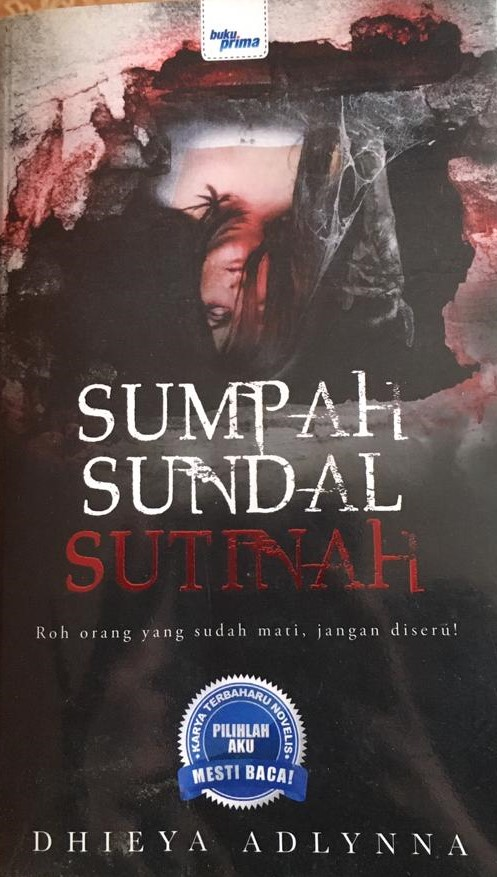

PRELOVED BOOKSTORE | 

Sumpah Sundal Sutinah
Preloved Price: RM 15.00
Category:Thriller
Summary: Roh orang yang sudah mati, jangan diseru!
Setiap warga Hospital Prima tahu sebaris nama ini. Kisahnya, sentiasa diceritakan dari satu mulut ke mulut lain. Kononnya Sutinah sudah menghantui Hospital Prima sejak 20 tahun dulu. Sehinggalah mereka semua dikejutkan dengan kejadian pelik. Seorang demi seorang dijumpai mati dalam keadaan mengerikan. Lebih mencurigakan, apabila pihak pentadbiran menyembunyikan punca sebenar kejadian itu sehingga mencetuskan rasa takut di kalangan warga Hospital Prima. Nabila seorang jururawat di hospital itu mula merungkai kejadian ngeri di sebalik gangguan Sutinah.
Apa sebenarnya sedang berlaku? Benarkah ia ada kaitan dengan Sutinah? Ataupun, mungkin juga Hospital Prima sudah terkena sumpah sundal Sutinah.
"Kau beruntung, sebab tak perlu nampak benda tak sepatutnya." ~ Bunga
"Tapi... tetap nampak kerusi malas yang tiba-tiba sahaja bergerak sendiri. Saya rasa... itu lagi seram..." ~ Nabila
"Aku bukan apa Bella. Aku takut... aku takut! Kalau-kalau nanti aku pula yang akan menjadi mangsa seterusnya..." ~ Tina
| Title | Sumpah Sundal Sutinah |
|---|---|
| ISBN | 9789674462932 |
| Format: | Paperback |
| Author: | Dhieya Adlyna |
| Categor: | Thriller |
| Publisher: | Buku Prima |
*Reminder: Please copy&paste the title of the book to put into the order list and also please calculate the price of the book your own to pay it on checkout form.